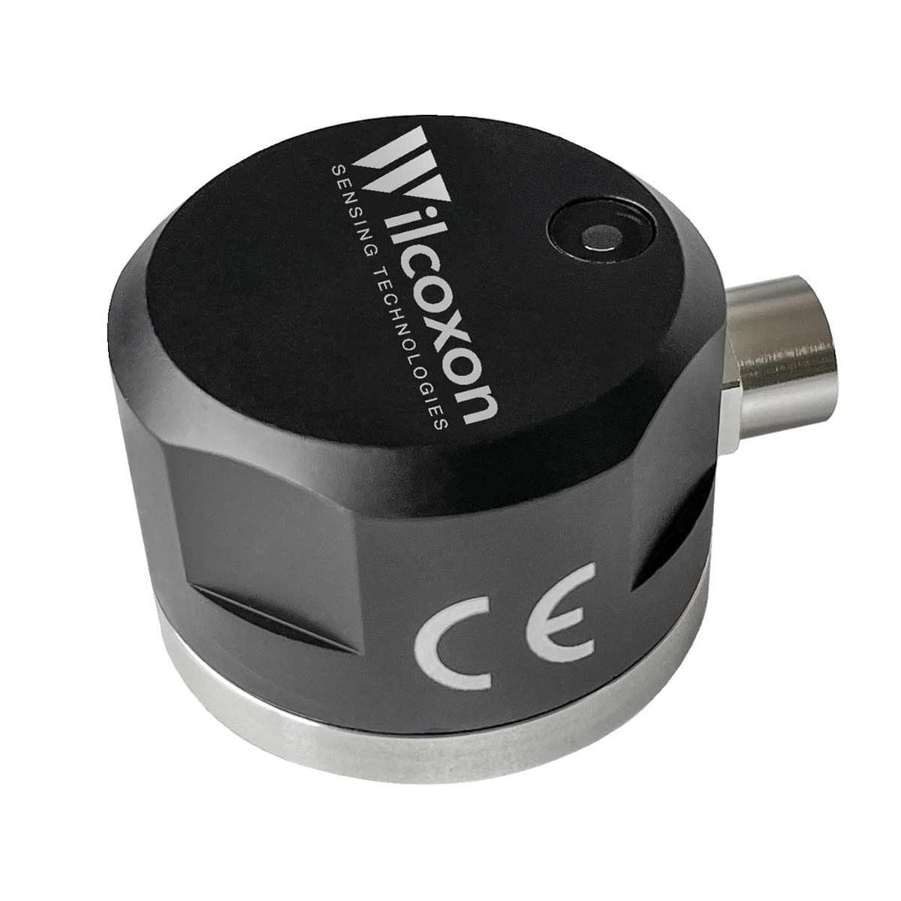
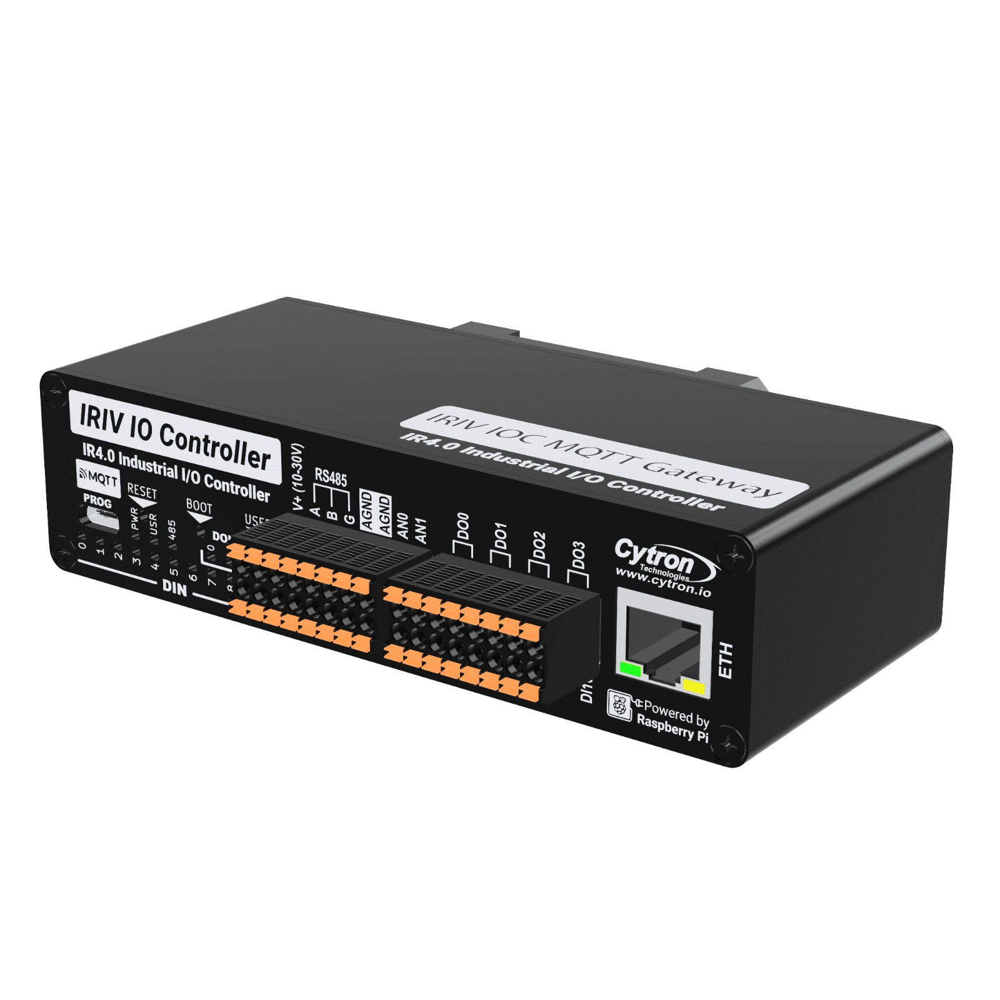
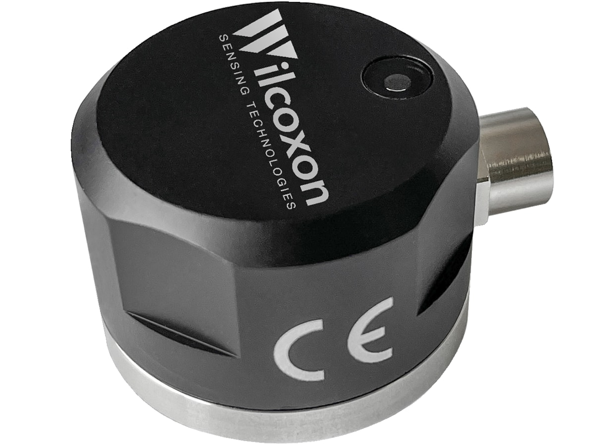
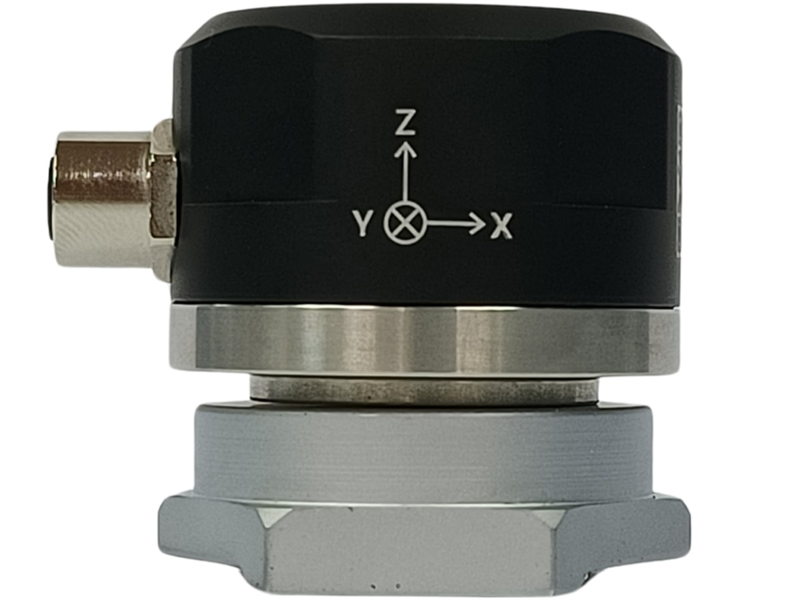

Machine condition monitoring
See a Wilcoxon 883M on a motor, an IRIV IO Controller reading it over RS485, and a local alarm that someone can acknowledge. Follow the data into Viking Analytics over MQTT.
Real product references · narrated 3D demonstration · interactive wiring



SenseWilcoxon 883M3-axis vibration + temperatureThe film
Follow the sensor, the wiring, the firmware setup, MultiViz and one complete alarm event.
English narration · short captions · 1080p.
Live
Connect to the MQTT broker the gateway publishes to and this panel shows its real readings, relay and buttons as they arrive. It only listens and never sends commands.
The browser needs the broker's WebSocket port (on this https page, wss://), not port 1883. Use a login that can only subscribe to the base topic. The password is never saved.
Try the alarm
Drag the velocity past 4.5 mm/s. DO0 turns on and stays latched. It drops only once the alarm is acknowledged on DI1 and the reading is back under the limit, in either order. This is the same logic the firmware runs.
Move the slider to publish a reading.
The firmware also applies the delay and hysteresis you set. Both are zero here.
Wiring
Three paths make the system work: sensor readings, network data, and a local alarm circuit.
V+V−ABG.DI1.Simplified view for orientation. Use the terminal-by-terminal table and the device documentation when wiring hardware.
| From | To | Notes |
|---|---|---|
| 24 V PSU + | IOC V+, 883M pin 1 (power) | IOC takes 10–30 V DC, the 883M 6–24 V DC. Keep the rail at 24.0 V, not above. |
| 24 V PSU − | IOC V−, 883M pin 2 (ground) | Common 0 V. |
| 883M pin 3 (signal +) | IOC RS485 A | Use 4-conductor shielded cable with an M8 4-pin plug, keeping signal + and − on one twisted pair. |
| 883M pin 4 (signal −) | IOC RS485 B | If there are no replies, swap A and B first. |
| 883M ground (0 V) | IOC RS485 G | Gives the isolated port its reference. Termination switch: 120 Ω ON (the IOC ends the bus). |
| Cable shield | Cabinet earth, one end only | The 883M ties the shield to its housing (pin 5). |
| 24 V + | IOC DO0 (first terminal) | DO0 is a solid-state output on its own pair of terminals, rated 50 V / 500 mA. |
| IOC DO0 (second terminal) | Relay coil A1; A2 to 0 V | Use a 24 V DC relay and fit a flyback diode across the coil. |
| Relay NO contact | Beacon + buzzer | The relay contact carries the beacon's current, not the IOC output. |
| 24 V + → push button (NO) | IOC DI1 | Wire S/S0..4 to 0 V so DI1 sees +24 V when pressed. A rising edge acknowledges. |
| Optional button | IOC DI0 | A rising edge starts an X/Y/Z waveform capture. |
| IOC Ethernet | Site network → MQTT broker → Viking Analytics | Plain MQTT on port 1883. See the TLS note below. |
Setup
.uf2 file.883M: metrics, waveforms and spectra. Status goes to 883M/status and I/O to 883M/io.| Topic | Direction | Content |
|---|---|---|
883M | Gateway → broker | Metrics, waveform chunks and spectrum chunks |
883M/status | Gateway → broker | Health status, normally every five minutes |
883M/io | Gateway → broker | io_status: inputs, outputs, latched and acknowledged, on every change and at least once a minute |
883M/command | Broker → gateway | Commands such as trigger_all and get_metrics, with the sensor serial number |
Wilcoxon 883M
Read the official Wilcoxon 883M datasheet (PDF) ↗
A digital triaxial MEMS accelerometer with a temperature sensor. It works out the vibration numbers itself and serves them over Modbus RTU, so the IOC only has to read registers.

| Metric | RMS bands | Peak bands |
|---|---|---|
| Acceleration | 2 Hz – 1 kHz · 10 Hz – 5 kHz | 2 Hz – 1 kHz · 10 Hz – 5 kHz |
| Velocity | 10 Hz – 1 kHz · 10 Hz – 5 kHz | 10 Hz – 1 kHz · 10 Hz – 5 kHz |
| Displacement | 2 Hz – 1 kHz · 10 Hz – 1 kHz | 2 Hz – 1 kHz · 10 Hz – 1 kHz |
The bands follow ISO 10816-3 and ISO 20816-3.